Sample Contact Page
HTML Project: 7
Introduction
In this project you will create a contact form on your website. This will enable people to send you short messages that will appear in your email inbox. Your messages will be forwarded to you using the free online service provided by Formspree.
You can display a finished version of this project on GitHub by clicking the image below.

Contact folder for your form
Your first step is to create a folder to hold the contact page for your website.
- In File/Windows Explorer, go to your C:\\websites folder. Inside this folder, create a new sub-folder named contact.
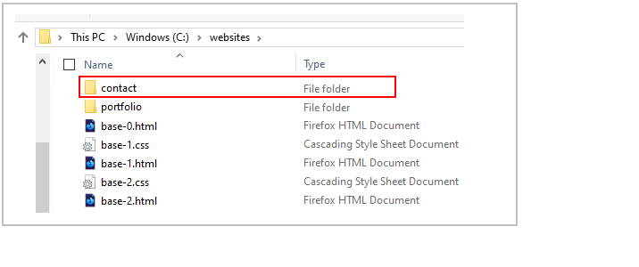
Download the HTML file
Follow these steps to download the template HTML file to your contact sub-folder.
- In your web browser, click to open the following template HTML file for the contact form:
Contact Form HTML template file
- The contact form named contact-form-template.html will open in a new tab of your web browser.
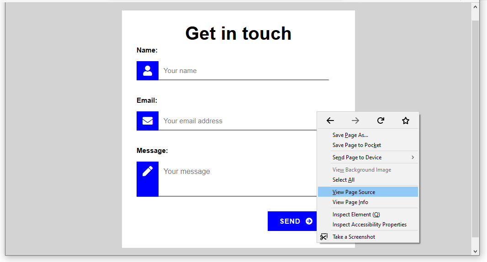
Right-click anywhere on the page and choose View page source (Chrome or Mozilla Firefox).
- Right-click on the displayed text and choose Save as… (Chrome) or Save Page As… (Mozilla Firefox).
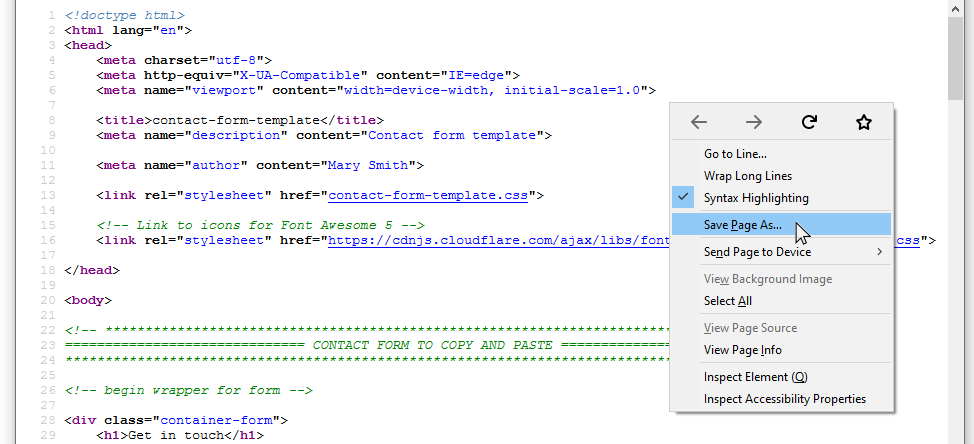
- In the File name: box, change the name of the file to index.html.
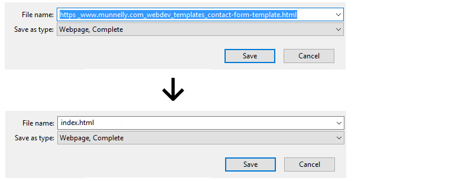
- In the Save as type: dropdown list, change from the default value Webpage, Complete to Web Page, HTML Only.
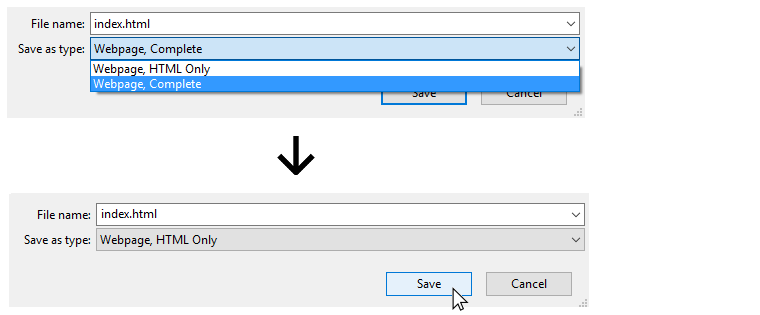
- Save the file as index.html file in your C:\websites\contact sub-folder.
Download the CSS file
Your next step is to download the CSS file of the template contact form.
- Go to the tab of your web browser that displays the contact form template named contact-form-template.html.
Right-click anywhere on the page and, from the pop-up menu displayed, choose View page source (Chrome or Mozilla Firefox).
- In the source code of the web page, click the link to the stylesheet file named contact-form-template.css.
 The CSS file now opens in a new tab of your web browser.
The CSS file now opens in a new tab of your web browser.
- Right-click anywhere on the displayed CSS file and choose Save as… (Chrome) or Save Page As… (Mozilla Firefox).
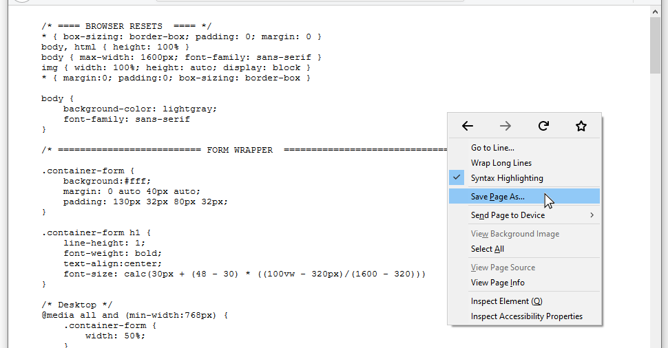
- Save the file as contact.css file in your C:\websites\contact folder.
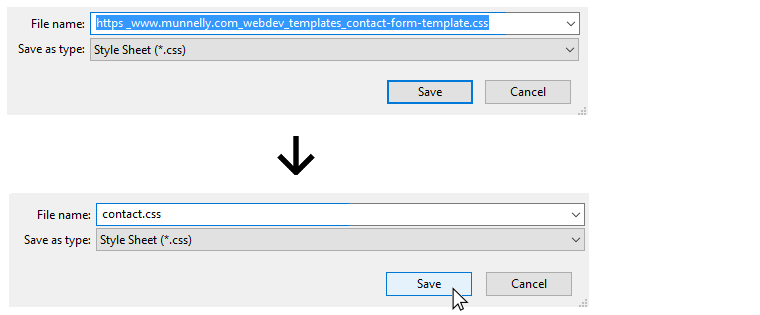
Your websites\contact sub-folder should now contain the two files named index.html and contact.css as shown below.
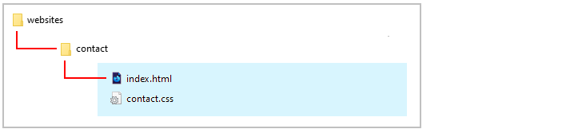
Start your text editor
Now you can begin to work with the files you have downloaded.
- In Visual Studio Code or other text editor, open the following two downloaded files from your websites/contact sub-folder:
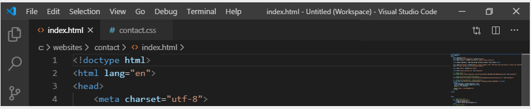
You can close any other files you may have open in your text editor.
In the <head> section of the index.html file you can see that the web page links to a stylesheet named contact-form-template.css. But your stylesheet is now named style.css.
So, in Visual Studio, edit the stylesheet link to style.css as shown below, and then save the index.htmlfile.
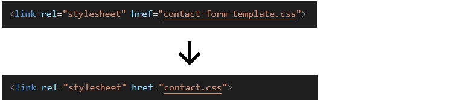
Start your web browser
As you work with the HTML and CSS files, you will want to be able to display in your web browser the results of the changes you will be making.
- In File/Windows Explorer, go to your C:\\websites\contact sub-folder. There you can see the index.html web page.
- If your default web browser is Firefox Developer Edition or Google Chrome, double-click this file to open it.
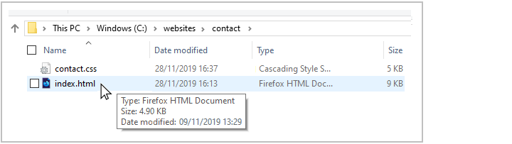
If not, right-click the file and, from the pop-up menu displayed, choose Open with and then select either Firefox Developer Edition or Google Chrome to open it.

The contact form web page should look as shown below.
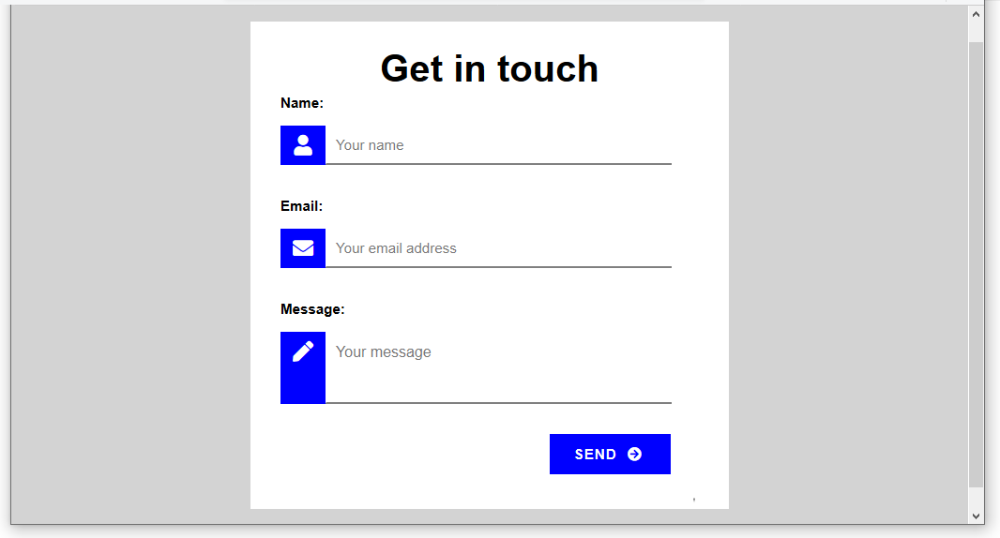
About HTML forms and GitHub
What are called forms in HTML enable users to submit information to websites for processing. A typical example of a form is shown below.

It includes three entry areas or form fields into which a user can input information: Name, Email and Message. At the bottom of the form is a submit button named Send. When clicked or tapped, this button submits the information entered in the form fields to the website.
Your web hosting account on GitHub cannot run the type of server-side program that is needed to process information entered by users into HTML forms. As a result, you need to use an external online service to collect the information entered to an HTML form by users of your website.
Two such popular email-processing services that offer a free tier are the following:
In the next section you will review an example of using the free version of the Formspree service in a contact form on your website.
Customise the contact form
Follow these steps to customise the HTML form in the index.html file.
- In Visual Studio, open the index.html file and scroll down to the line that begins with the opening <form...> tag.
You can see that this line contains an email address.

- Replace this email address with your own email address, and save the index.html file.
Update the meta tags
In the <head> of your index.html web page, you can see meta tags with the following values.
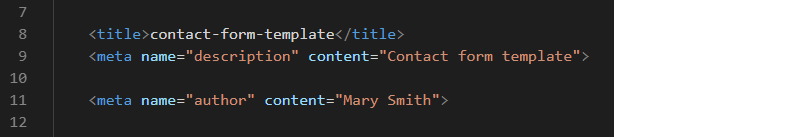
Replace the name 'Mary Smith' with your own name, and replace the text in the <title> and <description> tags with something similar to the following.
<title>Contact Form | Mary Smith | Web Design and Development Portfolio</title>
<meta name="description" content="Contact form for my personal portfolio website.">
<meta name="author" content="Mary Smith">
Save the index.html file.
Review the Font Awesome 5 icon stylesheet
In the <head> of your index.html web page, under the link to the contact.css stylesheet, is the link to another stylesheet: the CSS file for the Font Awesome 5 icon collection. You need not make any changes to this.
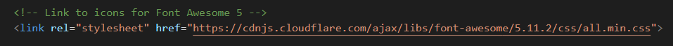
This CSS file is required to create the icons in the contact form.
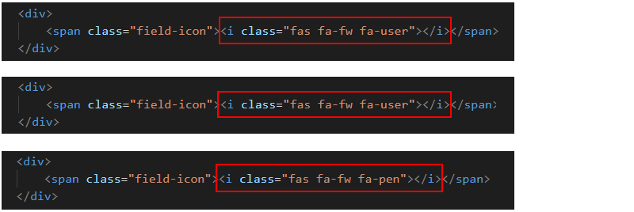
You can see a full list of Font Awesome icons at the web address below:
You can find some guidance on using Font Awesome icons below:
As with any Google Fonts you may use in your web pages, the Font Awesome icons will display on your computer only when you are connected to the Internet.
Add the Google Analytics tracking code
In the <head> section of the index.html web page, just before the closing </head> tag, add the following Google Analytics Tracking Code.
<
<script async src="https://www.googletagmanager.com/gtag/js?id=UA-122243940-1"></script>
<script>
window.dataLayer = window.dataLayer || [];
function gtag(){dataLayer.push(arguments);}
gtag('js', new Date());
gtag('config', 'UA-122243940-1');
</script>
When finished, save the index.html file.
Add the privacy pop-up code and message
In the <head> section of the index.html web page, just before the Google Analytics Tracking Code, add the following link to the stylesheet for the privacy pop-up message.
<link href="https://cdn.jsdelivr.net/npm/cookieconsent@3/build/cookieconsent.min.css" rel="stylesheet">
Next, scroll down to the bottom of the web page and, just before the closing </body> tag, add the followng JavaScript code.
<script src="https://cdn.jsdelivr.net/npm/cookieconsent@3/build/cookieconsent.min.js" data-cfasync="false"></script>
<script>
window.cookieconsent.initialise({
"palette": {
"popup": {
"background": "#000"
},
"button": {
"background": "#f1d600"
}
},
"content": {
"href": "https://ibat-web-dev.github.io/privacy.html"
}
});
</script>
When finished, save the index.html file.
Validate your HTML file
To check your HTML is correct, use the official W3C Markup Validation Service. Follow these steps.
- Go to this web page: https://validator.w3.org.
- Click the Validate by Direct Input tab.

- One after the other, copy and paste each of your three HTML files into the box named Enter the Markup to validate.
- Click the Check button.
- If you see any errors, return to your HTML files, fix the errors, save the file, and copy the entire file again.
In the HTML Validator, click the Back button of your web browser to again display the Validate by Direct Input tab. Click once in the tab and paste in your corrected HTML file. Your new, pasted-in file will replace the earlier version. Finally, click the Check button.
Validate your CSS file
To check your CSS is correct, use the official W3C CSS Validation Service. Follow these steps.
- Go to this web page: https://jigsaw.w3.org/css-validator.
- Click the By direct input tab.

- Copy and paste your CSS file into the box named Enter the CSS you would like validated.
- Click the Check button.
- If you see any errors (other than those related to the fluid typographic equation, as shown below), return to your style.css file in your text editor, fix the errors, save the file, and copy the entire file again.

- In the CSS Validator, click the Back button of your web browser to again display the By direct input tab. Click once in the tab and paste in your corrected CSS file. Your new, pasted-in file will replace the earlier version. Finally, click the Check button.
Upload the contact folder to GitHub
The next step is to upload your contact form to GitHub.
The two files named index.html contact.css are in a sub-folder named contact of your websites folder.
So you will need to upload this contact sub-folder to your account on GitHub.
- Open a new tab in your web browser and go to GitHub.com. If you are not already signed in to your GitHub account, sign in now.

- On your GitHub home page, click the name of the repository ('repo') that holds your web pages. Its name will look as follows, where username is your chosen username on GitHub.
username.github.io

- The next GitHub screen displayed should look as follows.

- Click the Upload files button.

- In File/Windows Explorer on your computer, drag-and-drop the contact folder to the GitHub tab in your web browser.
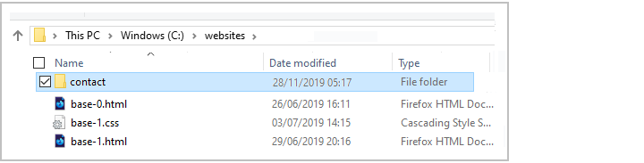
- After uploading the contact folder, scroll down to the bottom of the GitHub screen, enter a short message in the Commit changes box, click the Commit changes button, and wait for the upload to complete.

- Your website repo on GitHub should now contain a folder named contact. Click on this folder.
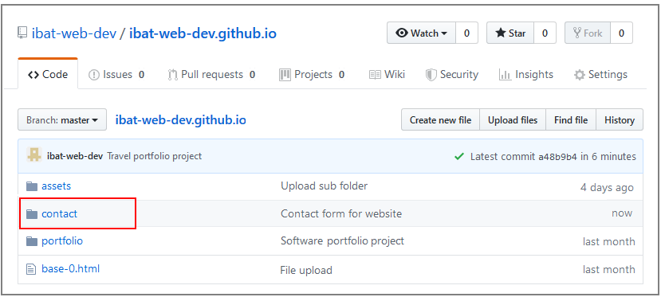
- The contact folder should contain both the index.html and the style.css files.
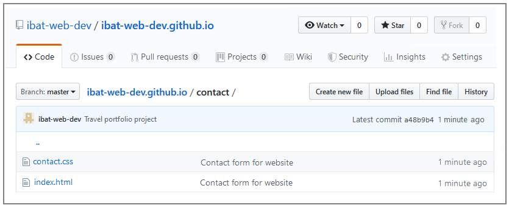
Your contact form web page is now published on GitHub at a web address similar to the following, where username is the username you have chosen for your GitHub account:
https://username.github.io/contact/index.html
or, simply:
https://username.github.io/contact
It may take a few minutes for your uploaded files to appear on GitHub.


 Formspree will immediately forward the submitted information to your email account. See the example below.
Formspree will immediately forward the submitted information to your email account. See the example below.